<nav class="navbar navbar-inverse">
  <div class="container-fluid">
    <div class="navbar-header">
      <button type="button" class="navbar-toggle" data-toggle="collapse" data-target="#myNavbar">
        <span class="icon-bar"></span>
        <span class="icon-bar"></span>
        <span class="icon-bar"></span>                        
      </button>
<<<<<<< HEAD
      <a class="navbar-brand" href=>  </a>
=======
      <a class="navbar-brand" href=>  </a>
>>>>>>> branch 'master' of https://gitlab.com/GRP-TOSEFS17-LITSCHI/PRJ-TOSEFS17-LITSCHI.git
    </div>
    <div class="collapse navbar-collapse" id="myNavbar">
      <ul class="nav navbar-nav">
        <li class="active"><a href="#/">Home</a></li>
        <li><a href="#red">About</a></li>
        <li><a href="#">Projects</a></li>
        <li><a href="#">Contact</a></li>
      </ul>
      <ul class="nav navbar-nav navbar-right">
        
      </ul>
    </div>
  </div>
</nav>